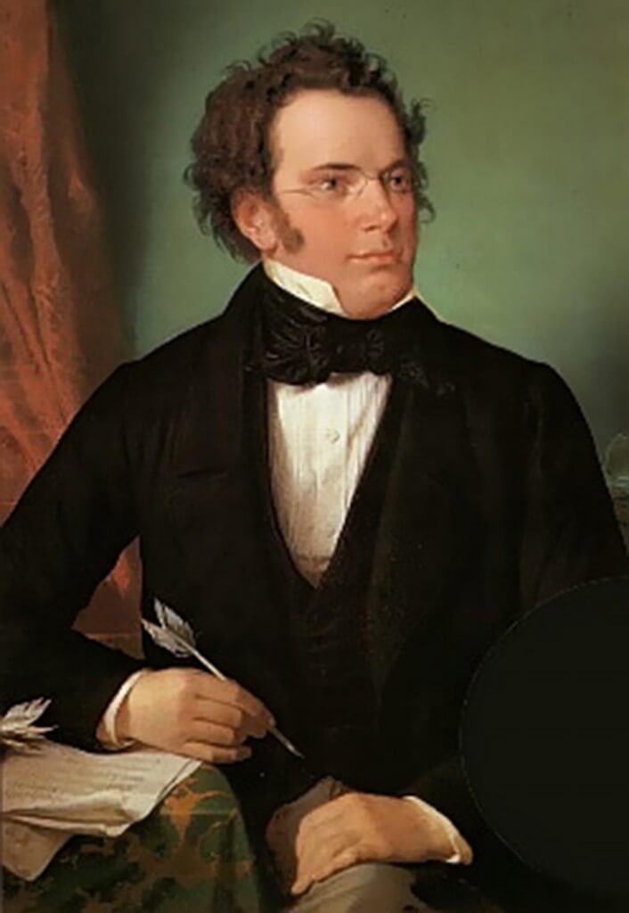

 (Himmelpfortgrund, actual Austria, 1797 - Viena, 1828) Compositor austríaco. Nacido en las proximidades de la misma Viena que acogió a Haydn, Mozart y Beethoven, a menudo se le considera el último gran representante del estilo clásico que llevaron a su máximo esplendor esos tres compositores y uno de los primeros en manifestar una subjetividad y un lirismo inconfundiblemente románticos en su música. El lied para canto y piano, uno de los géneros paradigmáticos del Romanticismo, encontró en él a su primer gran representante, cuyas aportaciones serían tomadas como modelo por todos los músicos posteriores, desde Robert Schumann hasta Hugo Wolf y Gustav Mahler.
Hijo de un modesto maestro de escuela, Schubert aprendió de su padre la práctica del violín y de su hermano mayor, Ignaz, la del piano, con tan buenos resultados que en 1808, a los once años de edad, fue admitido en la capilla imperial de Viena como miembro del coro y alumno del Stadtkonvikt, institución ésta en la que tuvo como maestro al compositor Antonio Salieri. La necesidad de componer se reveló en el joven Schubert durante estos años con inusitada fuerza, y sus primeras piezas fueron interpretadas por la orquesta de discípulos del Stadtkonvikt, de la que él mismo era violinista.
Tras su salida de este centro en 1813, Schubert, a instancias de su padre, empezó a trabajar como asistente en la escuela de éste, a pesar del poco interés demostrado por el músico hacia la labor pedagógica. En estos años es cuando ven la luz sus primeras obras maestras, como el lied El rey de los elfos, inspirado en un poema de Goethe, uno de sus escritores más frecuentados. Después de abandonar sus funciones en la escuela paterna, Schubert intentó ganarse la vida únicamente con su música, con escaso éxito en su empresa.
El único campo que podía reportar grandes beneficios a un compositor de la época era el teatro, la ópera, y aunque éste fue un género que Schubert abordó con insistencia a lo largo de toda su vida, nunca consiguió destacar en él, bien fuera por la debilidad de los libretos escogidos o por su propia falta de aliento dramático. Sus óperas, entre las que merecen citarse Los amigos de Salamanca, Alfonso y Estrella, La guerra doméstica y Fierabrás, continúan siendo la faceta menos conocida de su producción.
Si Schubert no consiguió sobresalir en el género dramático, sí lo hizo en el lied. Un solo dato da constancia de su absoluto dominio en esta forma: sólo durante los años 1815 y 1816 llegó a componer más de ciento cincuenta lieder, sin que pueda decirse de ellos que la cantidad vaya en detrimento de la calidad. Escritos muchos de ellos sobre textos de sus amigos, como Johann Mayrhofer y Franz von Schober, eran interpretados en reuniones privadas, conocidas con el elocuente nombre de «schubertiadas», a las que asistía, entre otros, el barítono Johann Michael Vogl, destinatario de muchas de estas breves composiciones.
Los ciclos La bella molinera y Viaje de invierno constituyen quizás la cima de su genio en este campo, a los que hay que sumar títulos como El caminante, La trucha, A la música, La muerte y la doncella o el celebérrimo Ave Maria. A pesar de la belleza de estas composiciones y de la buena acogida que encontraron entre el público, la vida de Schubert discurrió siempre en un estado de gran precariedad económica, agravada considerablemente a partir de 1824 por los primeros síntomas de la enfermedad que acabaría prematuramente con su existencia.
Admirado en un círculo muy restringido, la revalorización del compositor se llevó a cabo a partir de su muerte: obras inéditas o que sólo se habían interpretado en el marco familiar empezaron a ser conocidas y publicadas, y defendidas por músicos como Robert Schumann o Felix Mendelssohn. Es, sobre todo, el caso de su producción instrumental madura, de sus últimas sonatas para piano, sus cuartetos de cuerda y sus dos postreras sinfonías, a cuyo nivel sólo son equiparables las de Beethoven.
{kind=link}